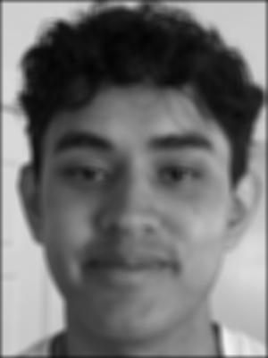
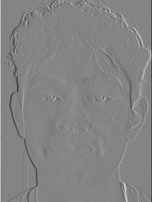
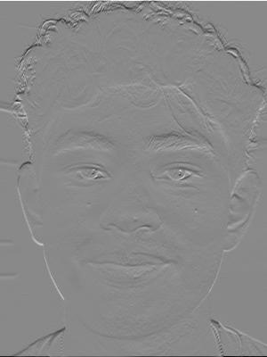
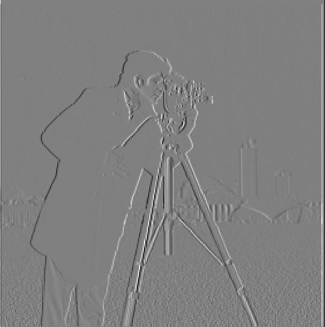
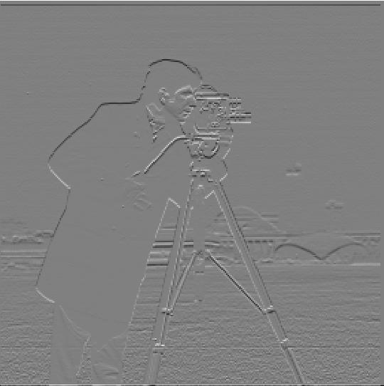

Part 1.1: Convolutions from Scratch
In this section, I implemented convolution from scratch in two ways: one using four
for loops and one using two. I applied both to a grayscale self-portrait with
three kernels: a 9×9 box filter, Dx = [1, 0, −1], and Dy = [1, 0, −1]T.
Padding & Flipping
In each case, I first prepped by padding the source image. With each kernel, we want to
center the kernel on each individual pixel; however, for edge pixels the kernel can extend
past the image bounds. To solve this, we add padding based on the kernel's size: we
calculate the height and width of the kernel and pad the original image's edges with zeros.
I then flip the kernel and run my for loops.
flip_kernel = kernel[::-1, ::-1]
kh, kw = kernel.shape
h, w = im.shape
pad_top = kh // 2
pad_bottom = (kh - 1) - pad_top
pad_left = kw // 2
pad_right = (kw - 1) - pad_left
padded = np.zeros(((h + pad_top + pad_bottom), (w + pad_left + pad_right)))
padded[pad_top:pad_top + h, pad_left:pad_left + w] = im
output = np.zeros(im.shape)Four Loops
In the four-loop case, I run nested for loops over the rows and columns of the
original image. Within these loops, I run a second set of nested loops over the kernel's
height and width. At each fully nested iteration, I add the current padded image pixel
multiplied by the current value of the flipped kernel to a running sum. After iterating
through the whole kernel for a given pixel, I set the corresponding output pixel to this sum.
for i in range(h):
for j in range(w):
total = 0
for u in range(kh):
for v in range(kw):
total += padded[i+u, j+v] * flip_kernel[u, v]
output[i, j] = totalTwo Loops
In the two-loop case, I run the same two nested loops over the original image. This time, instead of looping over the kernel itself, I take the kernel-sized slice of the padded image, multiply it elementwise with the flipped kernel, and set the output pixel to the sum of the resulting array.
for i in range(h):
for j in range(w):
output[i, j] = np.sum(padded[i:i + kh, j:j + kw] * flip_kernel)Results



Comparison with scipy.signal.convolve2d
Both of my implementations match scipy.signal.convolve2d (mode="same")
for every kernel.
Runtime Since the box kernel has a total of 81 entries, the two-loop version
wins: taking the kernel-sized slice of the image requires much less overhead than running a
Python loop over all 81 kernel entries for each pixel. However, for the Dx and Dy kernels,
the four-loop version wins, because the overhead of the NumPy calls takes longer than running
3 iterations of the inner loop. In all cases, convolve2d wins, as it runs compiled
C code rather than slow Python code.
| Kernel | Four loops | Two loops | scipy convolve2d |
|---|---|---|---|
| 9×9 box | 1.243s | 0.139s | 0.007s |
| Dx | 0.062s | 0.137s | 0.001s |
| Dy | 0.067s | 0.136s | 0.001s |
Boundaries Due to the zero padding, each kernel creates a different edge behavior. The box kernel darkens all edges, because the zero padding is averaged in around the whole image. The Dx kernel brightens the left edge and darkens the right edge, since at the left edge the +1 weight lands on a real pixel and the −1 weight on a padded zero, while at the right edge it is the opposite. The same applies to the Dy kernel, except it brightens the top edge and darkens the bottom edge.
Part 1.2: Finite Difference Operator
TODO: briefly explain convolving the cameraman image with Dx and Dy to get the partial derivatives, and how the gradient magnitude combines them.
Partial Derivatives & Gradient Magnitude



Binarized Edge Image
TODO: state the threshold you chose and justify the tradeoff between keeping all real edges and suppressing noise (e.g. the grass at the bottom).

Part 1.3: Derivative of Gaussian (DoG) Filter
TODO
Part 2.1: Image "Sharpening"
TODO
Part 2.2: Hybrid Images
TODO
Part 2.3: Gaussian and Laplacian Stacks
TODO
Part 2.4: Multiresolution Blending
TODO